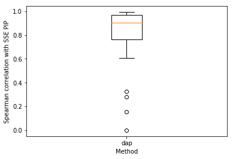

PIP calibration
Table of Contents
Introduction
Here we estimate Spearman correlation between posterior inclusion probabilities (PIPs) computed using the Sum of Single Effects (SSE) variational approximation against other methods:
- FINEMAP (2016). We used version 1.1, setting the prior on the effect size
scale to \(N(0, 1)\) (matching the simulation). We used defaults for all
other settings. (
sse.wrapper.finemap) - DAP (2016). We used version 1.0, setting \(\phi = 0\) (no heterogeneity
between groups of samples) and \(\omega = 1\) (matching the
simulation). (
sse.wrapper.dap)
The simulation generative model is as follows:
Sample a gene on chromosomes 1-22
genes = (pd.read_table('/home/aksarkar/projects/singlecell-qtl/data/scqtl-genes.txt.gz') .set_index('gene') .query('source == "H. sapiens" and chr != "hsX" and chr != "hsY"'))
Extract genotypes of GEUVADIS individuals \(X\) from 100 kilobases upstream (respecting strand) of the gene start (
sse.evaluate.read_vcf)genotype_files = ["/project/compbio/geuvadis/genotypes/GEUVADIS.chr{}.PH1PH2_465.IMPFRQFILT_BIALLELIC_PH.annotv2.genotypes.vcf.gz".format(i) for i in range(1, 23)]
- Estimate MAF \(f_j\) from \(X\) (
sse.simulation.Simulation.estimate_maf) - Fix proportion of variance explained \(h^2 = 0.15\) (mean cis-heritability of gene expression across all genes; Gusev et al 2016, Wheeler et al 2016)
- Sample causal effects from \(\beta_j \sim N(0, 1)\)
(
sse.simulation.Simulation.sample_effects). To ensure the methods can detect the causal variant, we only sample from among variants with minor allele frequency \(> 0.25\). (sse.evaluate._generate_pheno) - Compute genetic variance \(V_g = \sum_j 2 f_j (1 - f_j) \beta_j^2\)
- Sample residuals \(\epsilon_i \sim N(0, V_g (1 / h^2 - 1))\)
- Compute phenotypes \(y_i = X_i\beta + \epsilon_i\) (
sse.simulation.Simulation.compute_liabilities)
One causal variant
one_causal = sse.evaluate.pip_calibration(
genes=genes,
genotype_files=genotype_files,
num_genes=1,
num_trials=10,
num_effects=10,
max_epochs=100,
seed=0)
plt.clf() plt.boxplot(one_causal.values, labels=one_causal.columns) plt.xlabel('Method') plt.ylabel('Spearman correlation with SSE PIP') plt.gcf()

Investigate what's going on with FINEMAP:
x, y, s = sse.evaluate._generate_pheno(0, genes.loc["ENSG00000143641"], genotype_files, 1, int(1e5)) pip = (sse.model.GaussianSSE() .fit(x, y) .pip_df .agg(np.sum, axis=1) .to_frame() .merge(sse.wrapper.finemap(x, y), left_index=True, right_index=True) .rename(columns={0: 'sse_pip', 'pip': 'finemap_pip'})) pip['causal'] = s.theta != 0 pip['true_effect'] = s.theta
SSE correctly recovers the causal variant, although the PIPs suggest that the simulated problem might be difficult for any method.
pip.sort_values(by='sse_pip', ascending=False).head()
sse_pip index finemap_pip log10bf causal true_effect
snp1278 0.264491 1279 0.1968 2.3662 True 1.031421
snp1232 0.225833 1233 0.1843 2.3312 False 0.000000
snp714 0.114354 715 0.1195 2.1096 False 0.000000
snp980 0.085730 981 0.0867 1.9547 False 0.000000
snp1122 0.071195 1123 0.0548 1.7401 False 0.000000
FINEMAP assigns stronger PIP to non-causal variants.
pip.sort_values(by='log10bf', ascending=False).head()
sse_pip index finemap_pip log10bf causal true_effect
snp1398 2.676482e-05 1399 1.0000 12.9767 False 0.000000
snp1404 1.135552e-08 1405 0.9998 6.6873 False 0.000000
snp676 7.362895e-14 677 0.8887 3.8795 False 0.000000
snp1278 2.644909e-01 1279 0.1968 2.3662 True 1.031421
snp1232 2.258332e-01 1233 0.1843 2.3312 False 0.000000
FINEMAP picks SNPs in strong LD with the causal variant over the causal variant:
query = pip.sort_values(by='log10bf', ascending=False).head().index pd.DataFrame(x, columns=['snp{}'.format(i) for i in range(x.shape[1])])[query].corr()
snp1398 snp1404 snp676 snp1278 snp1232
snp1398 1.000000 -0.761444 -0.100979 0.793857 0.811527
snp1404 -0.761444 1.000000 0.047893 -0.582444 -0.598379
snp676 -0.100979 0.047893 1.000000 -0.107882 -0.106737
snp1278 0.793857 -0.582444 -0.107882 1.000000 0.973466
snp1232 0.811527 -0.598379 -0.106737 0.973466 1.000000